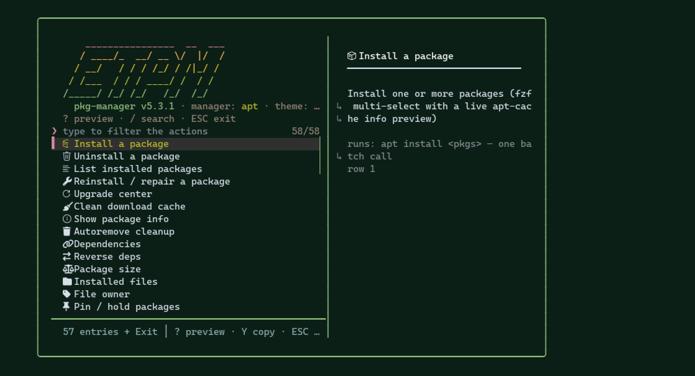

← Family hub
System · Bash + fzf · Termux
pkg-manager
A friendlier face for apt and pkg: fuzzy package pickers, profiles, exact lock files, health history and an inspector that explains what it is about to do.
pkg install curl -y
curl -fsSL https://raw.githubusercontent.com/Mark44928/Easy-Termux-Package-Manager/master/install.sh | bash
pkg-manager

- 57 actionsone menu, text or fzf
- Profilescore, dev, net, power, media, themes
- Lock filesexact package=version pins
- 193 testshermetic fakebin suite